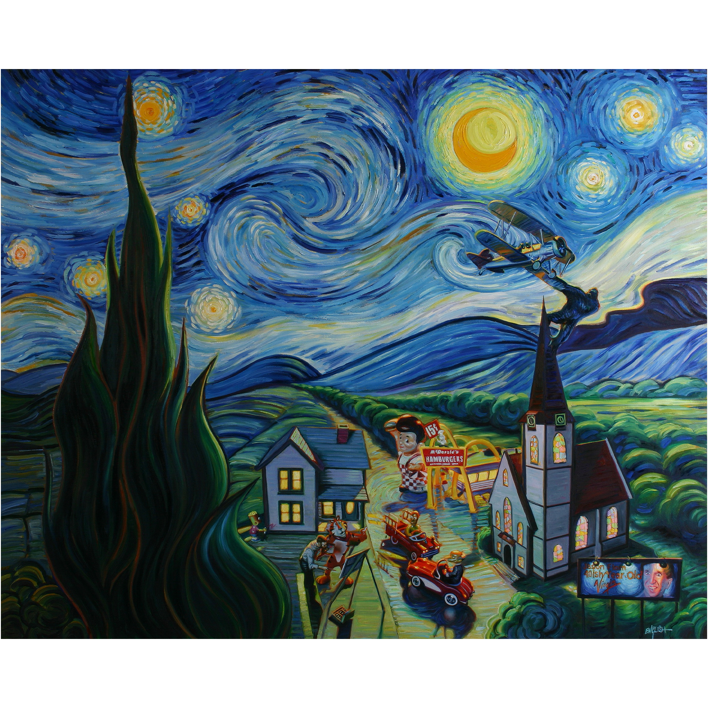

Literature
Ron English, Abject Expressionism: The Art of Ron English (San Francisco: Last Gasp, 2002), p. 14. ISBN 978-0867196894.
Notes
This work references Vincent Van Gogh’s Starry Night.


Ron English, Abject Expressionism: The Art of Ron English (San Francisco: Last Gasp, 2002), p. 14. ISBN 978-0867196894.
This work references Vincent Van Gogh’s Starry Night.